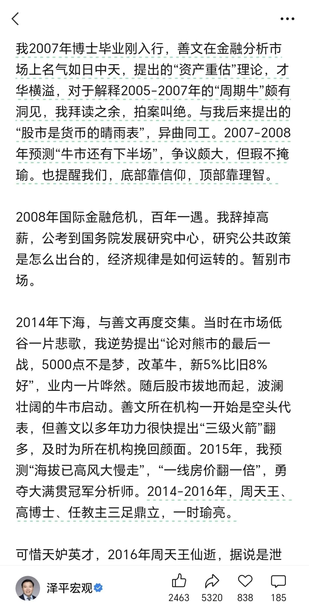

三足鼎立，一时瑜亮，四世三公，吓汝一跳
来源:
太阳照常升起
发布时间:
2026-07-08
原文链接:
https://mp.weixin.qq.com/s/kSPu-PxmdIraDwB1L9KgFw
都说自媒体没有底线，但真正没有底线的人，其实也很难猜测他的上限。
刚看到这段，本来还有点犯困，立马被“三足鼎立、一时瑜亮”笑醒了。

每天找热点给自己脸上贴金就算了，还要消费逝者。
关键跟逝者毛关系没有。
高善文每个时期都在表达自己的观点，他的观点自成体系，并且很多时候他本来不需要讲，但出于本心，还是讲了，哪怕知道讲了会对自己不利。这就是为什么很多人还是佩服他。佩服不一定是每个具体的论断，而是一个人敢于抗住压力，公开表达自己的本心。
至于某位自封的野生教主，当年什么水平，人尽皆知，不得已才干起了网红买卖，到底是“三足鼎立、一时瑜亮”，还是“
四世三公，百姓所归
”，抑或是“
说出吾名，吓汝一跳
”，想必民间自有公论了。
以上。